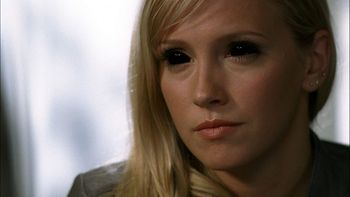
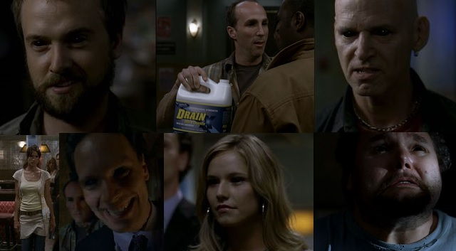
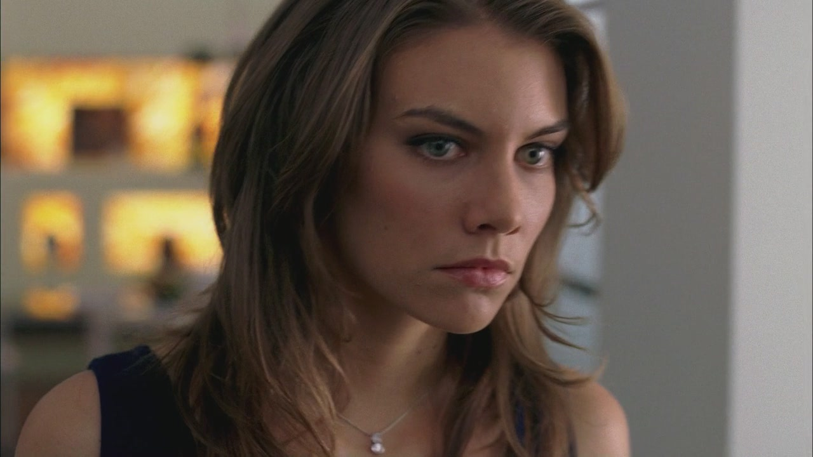
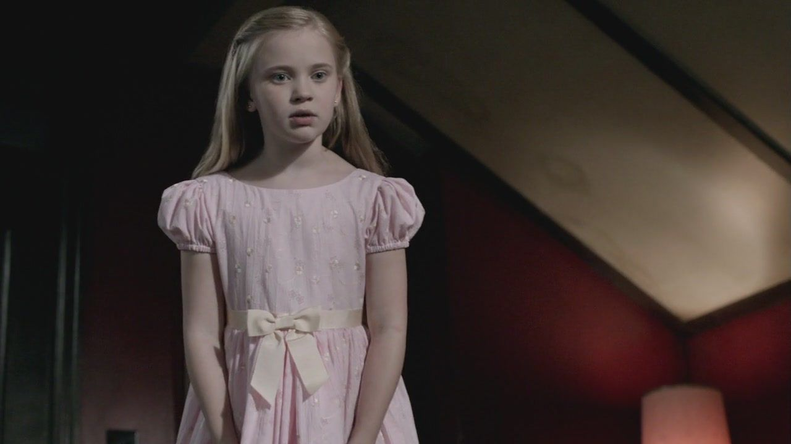
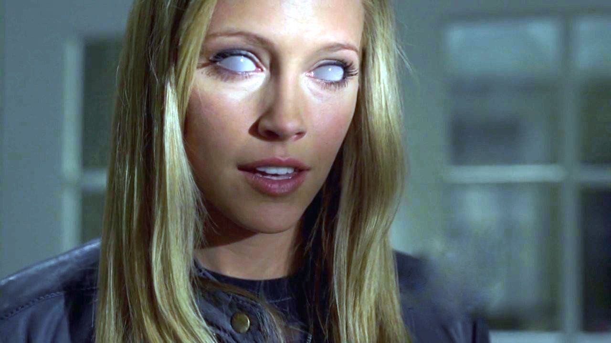
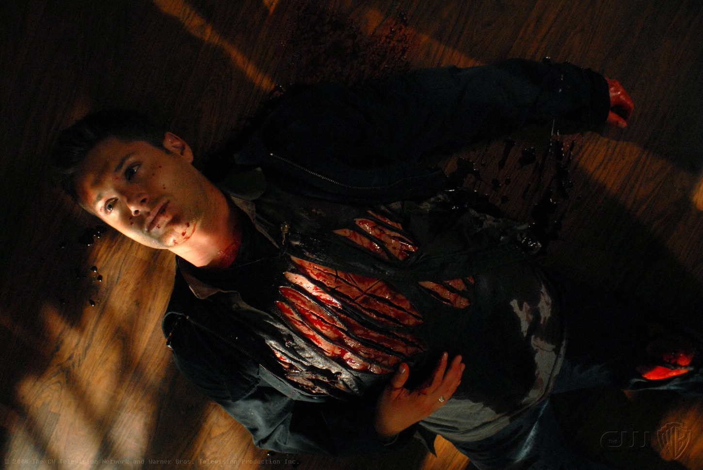

Temporada 3

Com a abertura do portal do Inferno, centenas de demônios parecem ter escapado. Dean quer aproveitar seu último ano de vida, acabando com o máximo de criaturas malignas que puder, e Sam conhece uma garota misteriosa. Eles enfrentam os demônios que representam os sete pecados.


Além disso, eles conhecem Bela Talbot, uma adquirente e vendedora de objetos ocultos, que está constantemente um espinho no seu lado. Os irmãos finalmente descobrem que é o demônio detém contrato de Dean, um ser de grande poder chamada Lilith.


Faltam poucas horas para o término do prazo de Dean e Sam procura ajuda com Ruby. Os dois afirmam estar preparados para enfrentar Lilith, e juntos com Bobby, descobrem sua localização e elaboram um plano para finalmente enfrentá-la numa batalha mortal.
Sam e Dean roubam a faca de Ruby mas o plano falha e Dean acaba não conseguindo fugir do pacto.

